THEATRE & EVENT VISUALS
Sleep
No More.
Visual design for the immersive theatre world of Sleep No More Shanghai and The McKinnon Hotel.
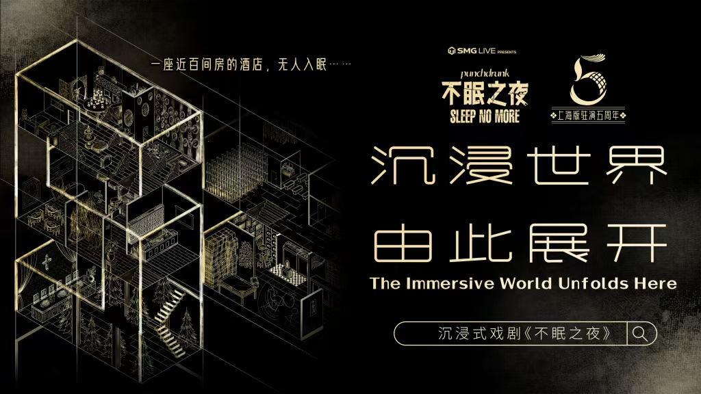
THE IMMERSIVE WORLD
A world
unfolds.
Illustrated campaign visuals and applications for the Shanghai production.
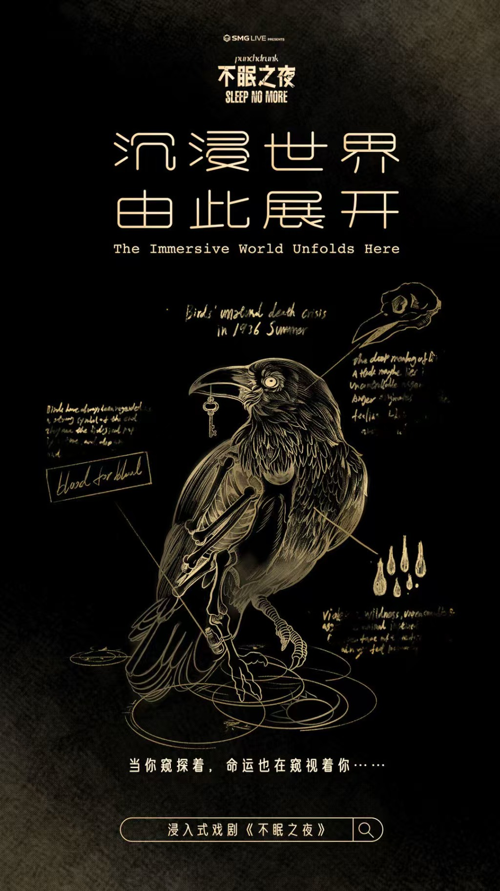
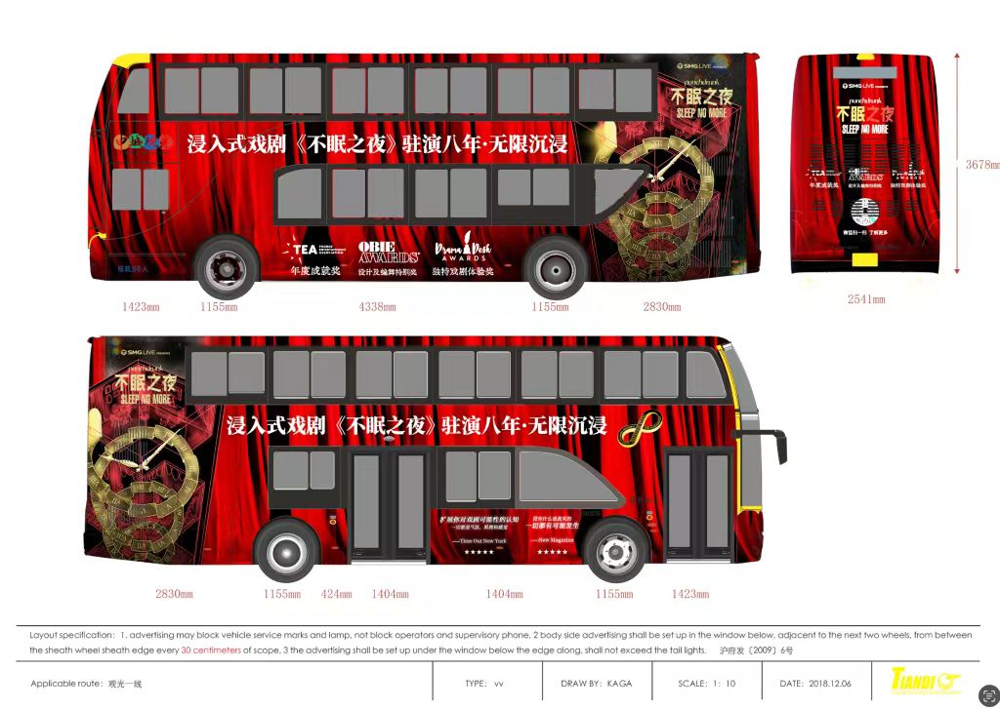
THE McKINNON HOTEL
Infinity
Carnival.
A visual series for The McKinnon Hotel’s eighth anniversary and New Year carnival.
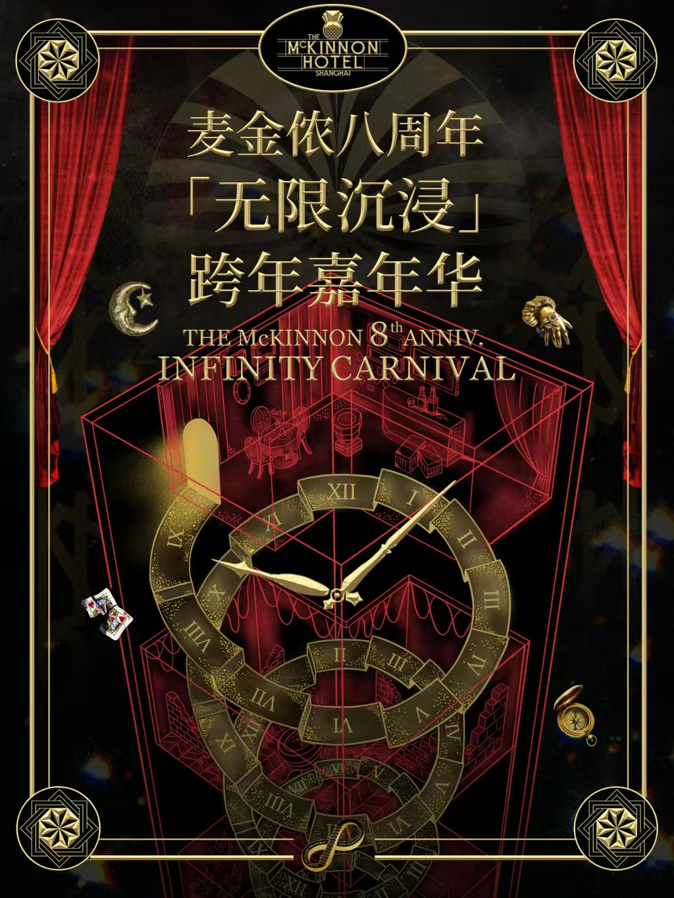
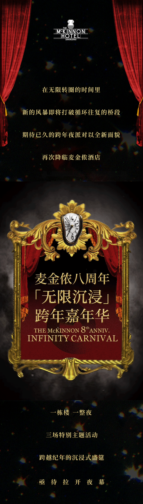
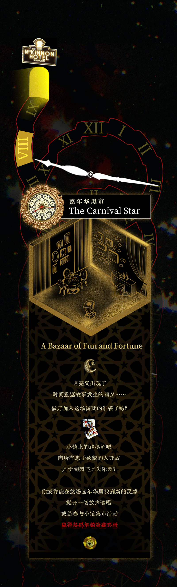
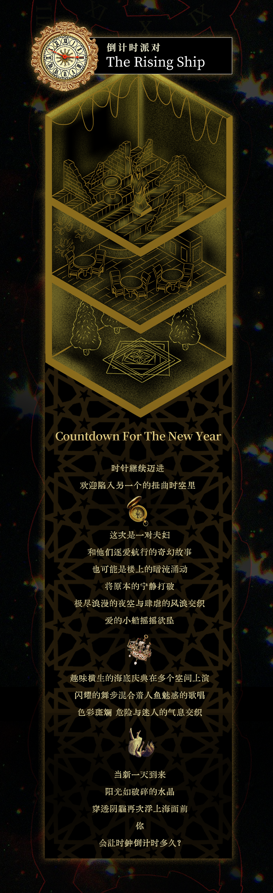
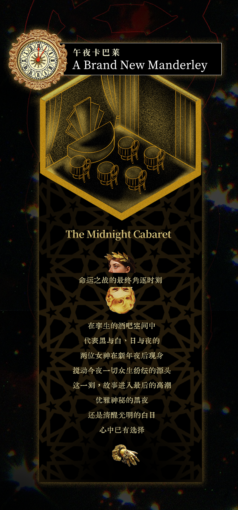
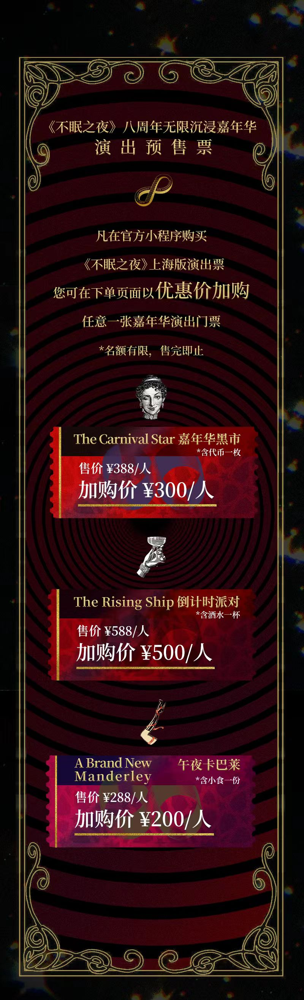
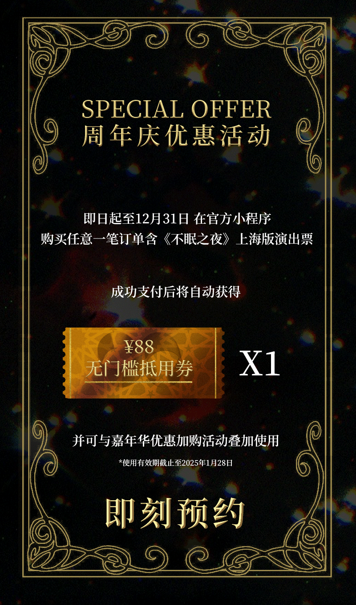
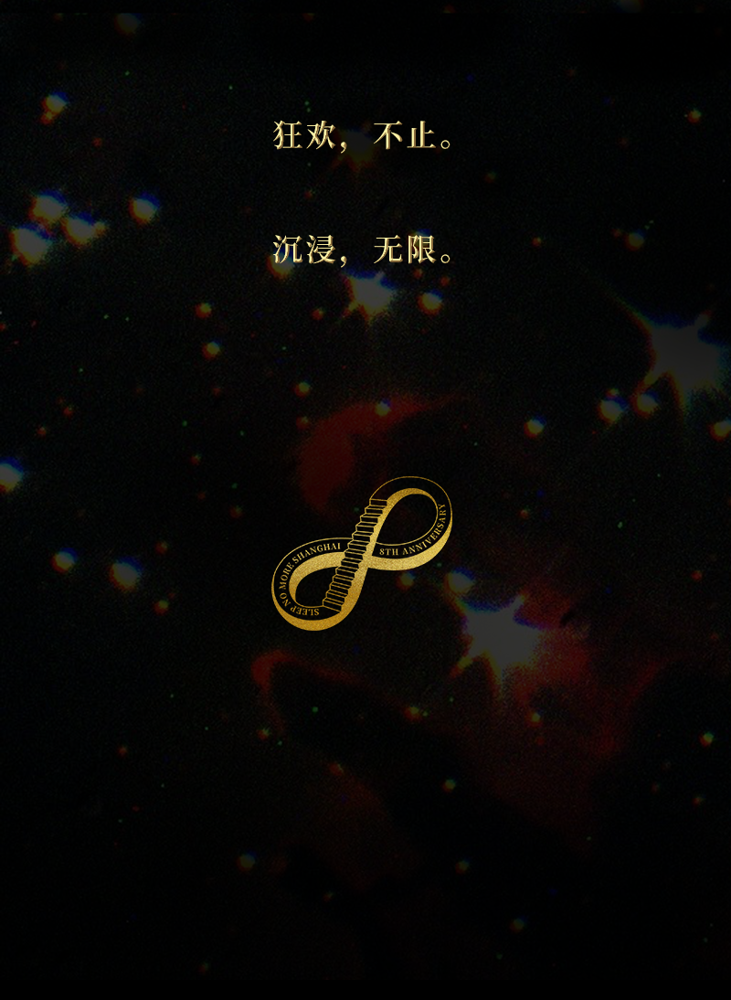
NEW YEAR’S EVE
Surrealist
Ball.
A playful illustrated visual world for a New Year’s Eve event.
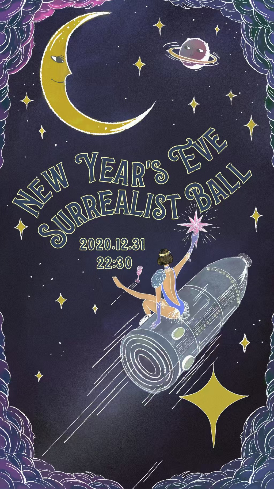
THE McKINNON HOTEL
More nights
at the hotel.
Visuals for cabaret and the hotel’s spaces.
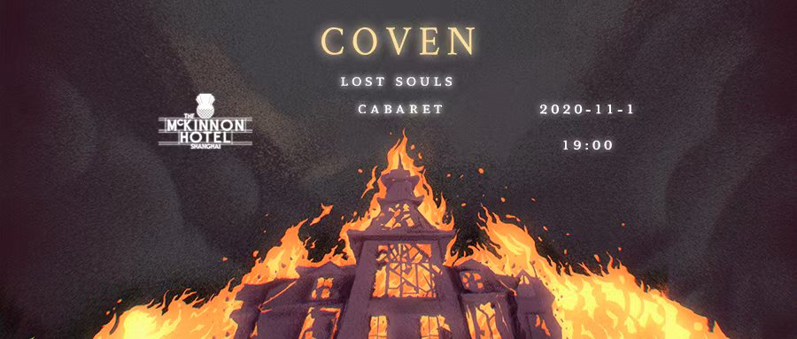
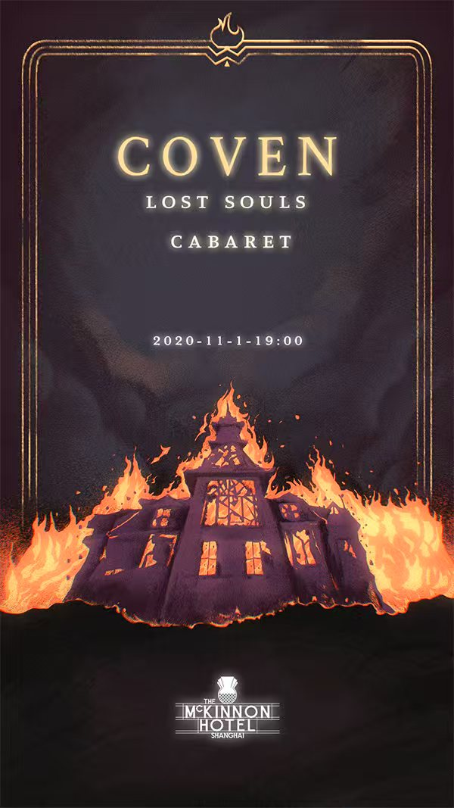
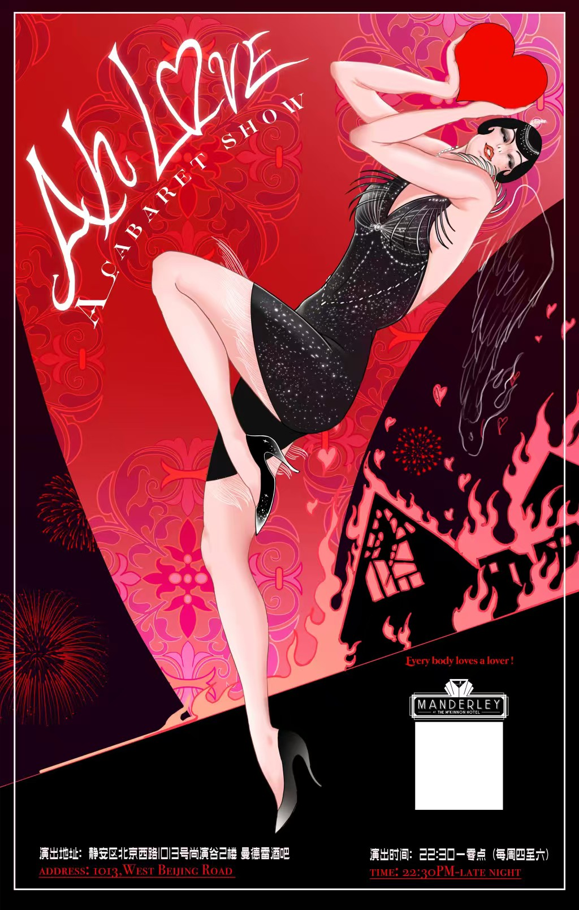
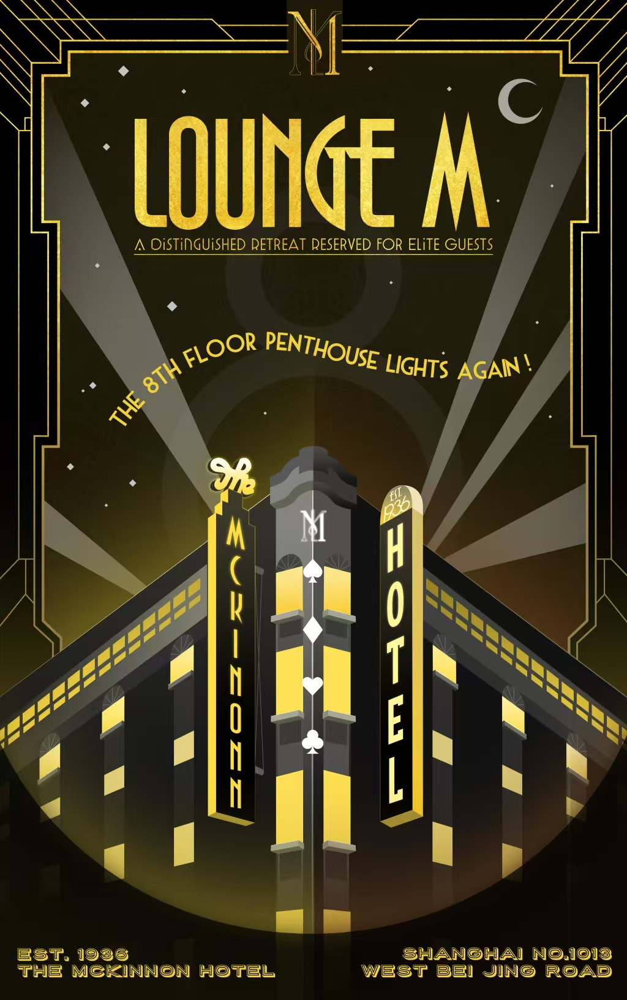